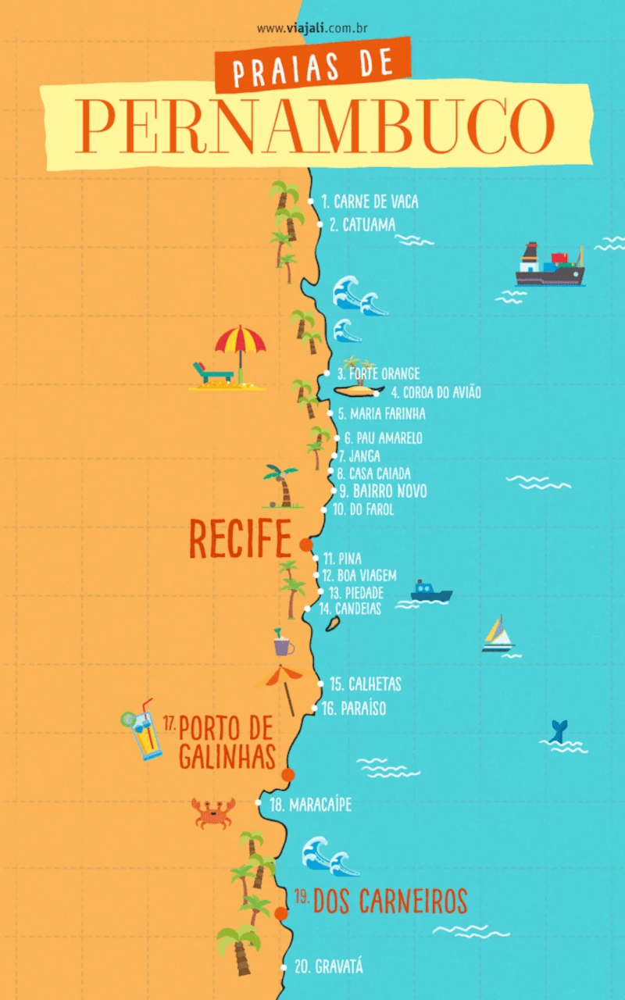

Litoral Pernambucano
Praias
Durante o ano todo, as praias de Pernambuco são elogiadas por visitantes do Brasil e do mundo inteiro. Suas lindas paisagens, brisa fresca e mar quentinho garantem muita tranquilidade e diversão. Você prefere mares tranquilos ou agitados? Gosta daquela faixa de areia cheia de turistas ou curte recantos mais calmos? No litoral pernambucano, será fácil encontrar diferentes opções.
